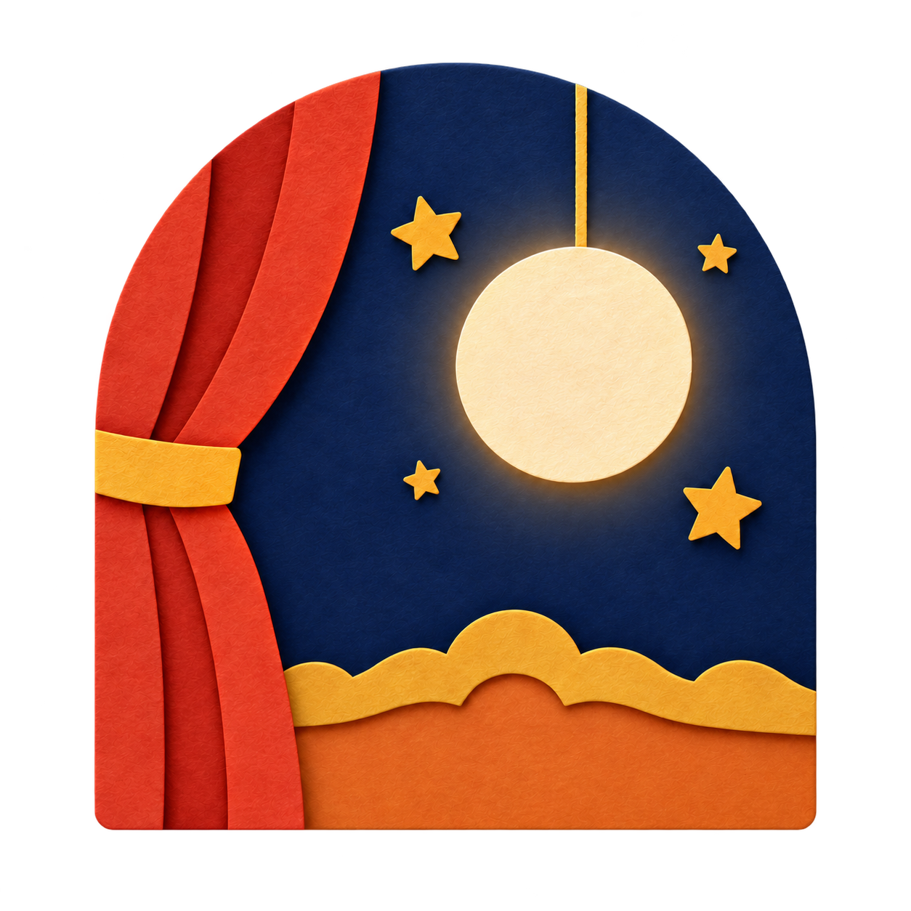

TOK TOK · PAPER THEATRE · C
선택한 C2와 이전 시안을 같은 크기로.
사용자가 선택한 C2 ‘무대 위 달’을 아이콘·마크로 적용했습니다. 이전 후보도 보존했습니다.
180·60·32·16은 CSS px 기준입니다. 선택 C2의 32·16px는 원본을 줄인 버전입니다. 이웃의 색 네모는 격자 대비 확인용 도형입니다.
선택한 C2 투명 마크 · 배경 두 가지
WARM PAPER

DARK WALLPAPER


기존 C 마크 원본
기존 파일은 마젠타 바탕의 RGB 이미지입니다. 투명 마크와 동등한 배경 비교가 불가능해서 원본 참고로 분리했습니다. 원본은 변경하지 않았습니다.
C2 선택 반영
- 아이콘은 사용자 원본을 그대로 사용하고 크기만 변환했습니다.
- 원본 마크는 보존하고, 내장 이미지 생성 도구로 마젠타 바탕을 제거한 투명 파생본을 사용했습니다.
- 홈 마크·웹 아이콘·iOS/Android 런처·스플래시에 같은 C2 그림을 연결했습니다.
- 16·32px는 선택 원본을 줄인 버전입니다. 기존 C안의 소형 벡터는 C2에 사용하지 않았습니다.